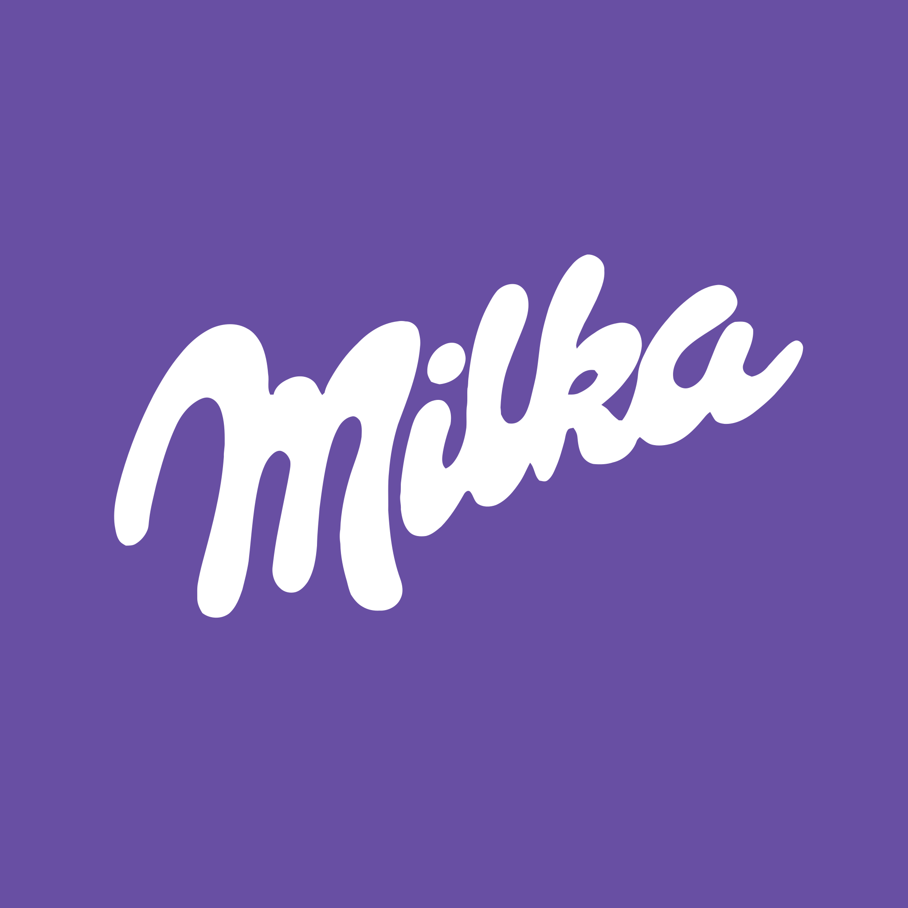
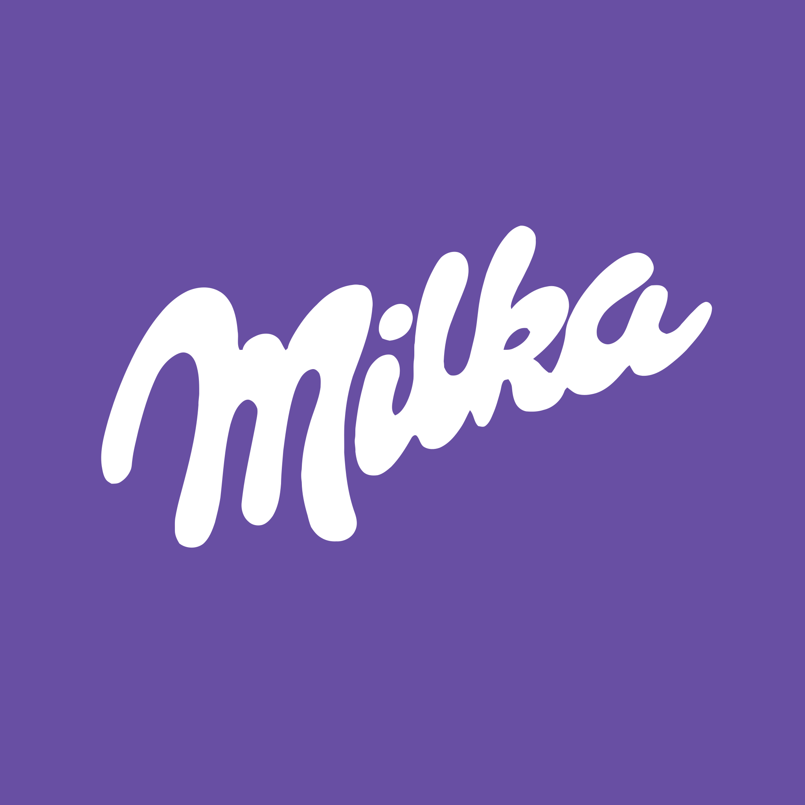

Dos leyendas. Dos iconos. Dos fuerzas imponentes con orígenes totalmente opuestos. El espíritu navideño contra el poder divino. Por primera vez en la historia, podrás presenciar quién domina realmente los cielos.
AVERIGUENLO SOLO POR RTVE.Dos leyendas. Dos iconos. Dos fuerzas imponentes con orígenes totalmente opuestos. El espíritu navideño contra el poder divino. Por primera vez en la historia, podrás presenciar quién domina realmente los cielos.


El Teatro Arriaga es un edificio emblemático de Bilbao con una fachada impresionante de estilo neoclásico. Inaugurado en 1919 y restaurado en los años 80, conserva toda su elegancia original. El interior es simplemente espectacular, con decoraciones doradas, palcos ornamentados y una acústica excelente. Es sede de ópera, ballet y teatro de calidad nacional e internacional.
Y usted podra ser parte de este evento unico en el mundo en el que se enfrentaran 2 grandes.
| Entradas | Precio |
|---|---|
| Normal | 1.99$ |
| Media | 4.99$ |
| VIP | 19.99$ |
| Comprar Ahora | |


 
